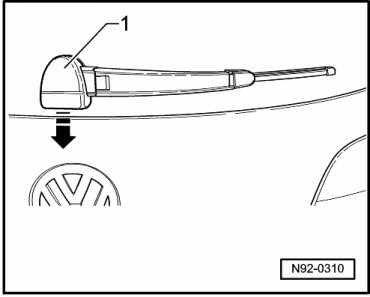
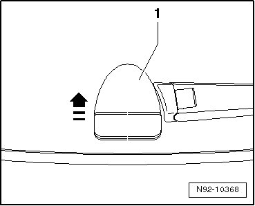
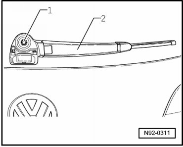

Rear Window Wiper Arm
Rear Window Wiper Arm
• Rear window must remain closed when removing and installing.
Special tools, testers and auxiliary items required
• Torque Wrench (V.A.G 1331/)
Removing
- Move the wiper into park position.
• Vehicles through 01/05 and from 02/05 have a different cover cap - 1 - over the wiper arm mounting nut.
Vehicles through 01/05:
- Unclip rear window wiper cover cap - 1 - downward - arrow -.

Vehicles from 02/05:
- Press cover cap - 1 - up until it releases - arrow -.

Continuation for all vehicles:
- Remove cover cap - 1 - straight back from rear window wiper arm.
- Loosen hex nut - arrows - but do not remove it completely.

- Fold wiper arm up - 2 - and loosen it from cone using sideways motions.
- Remove hex nut - 1 - completely and pull wiper arm - 2 - off wiper arm shaft.
Installing
- Install wiper arm in reverse order of removal and set the rear window wiper rest position --> [ Rear Window Wiper Blade Park Position, Adjusting ] Rear Window Wiper Blade Park Position, Adjusting.